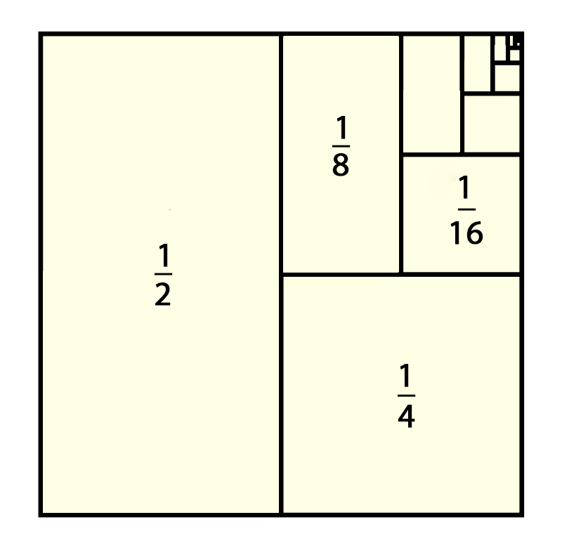

Увод
Пре више стотина година у Индији је живео краљ Ширхам који је волео да игра игре, али се заситио старих игара и хтео је нешто са више изазова. Затражио је од сиромашног математичара Сете бен Дахира, који је живео у његовом краљевству, да му измисли нову игру. Та нова игра је шах. Краљ се толико одушевио да је математичару за награду понудио шта год пожели. ,,Желео бих да ми на прво поље шаховске табле дате једно зрно пшенице, на друго два, на треће четири, и на свако следеће поље дупло више зрна пшенице него на претходном пољу“, рекао је ,,скромни“ математичар. Краља је овај одговор увредио, али је ипак наредио својим слугама да математичару дају тражену награду. Убрзо је схватио да у читавој Индији нема довољно пшенице да се попуне сва поља шаховске табле.
Број зрна пшенице није ништа друго него сума првих 64 члана геометријске прогресије, почетног члана 1 и количника 2 и она износи 18 446 744 073 709 551 615 (18 квадрилиона 446 трилиона 744 билиона 73 милијарде 709 милиона 551 хиљада 615).
Док свако зна како да сабере два броја, или чак више бројева, није сасвим јасно како да саберемо бесконачно много бројева. Бесконачни редови имају понекад коначан збир, као у $${1 \over 2}+ {1 \over 4}+ {1 \over 8}+ {1 \over 16}+⋯=1$$ Овај збир је геометријски представљен површинама преполовљених јединичних квадрата који се понављају, као што је овде приказано. Површине малих правоугаоника сабирају је заједно да би дале површину јединичног квадрата који они испуњавају. Што више чланова сабирамо ближи смо коначном збиру.
Други бесконачни редови имају коначан збир, као за $$1+2+3+4+5+⋯$$ Збир првих неколико бројева постаје све већи додавањем чланова. Узимањем довољног броја чланова, ови збирови постају већи од било које претходно изабране константе. Са неколико бесконачних редова, као што су хармонијски редови $$1+ {1 \over 2}+ {1 \over 3}+ {1 \over 4}+ {1 \over 5}+ {1 \over 6}+⋯$$ није очигледно да ли коначан збир постији. Није јасно да ли нас сабирање све више чланова приближава неком збиру или нас оно води до збирова који расту без граница. Низ је листа бројева $$a_1,a_2, a_3,…,a_n,…$$ у датом поретку. Сваки од \(a_1, a_2, a_3\) и тако редом представља један број. Они су чланови низа. На пример, низ $$2,4,6,8,10,12,…,2n,…$$ има први члан \(a_1=2\), други члан \(a_2=4\) и n-ти члан \(a_n=2n\). Цео број n назива се индекс од a_n и он показује где се \(a_n\) појављује на листи. Можемо да размишљамо о низу $$a_1,a_2,a_3,…,a_n,…$$ као о функцији што шаље 1 према \(a_1\), 2 према \(a_2\), 3 према \(a_3\), и углавном шаље позитиван цео број n према n-том члану \(a_n\). Ово води до формалне дефиниције низа.
ДЕФИНИЦИЈА Бесконачни низ
Бесконачни низ бројева јесте функција чији је домен скуп позитивних целих бројева.